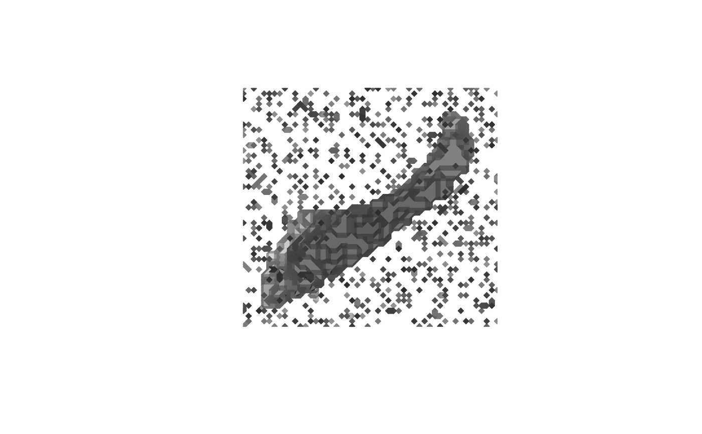
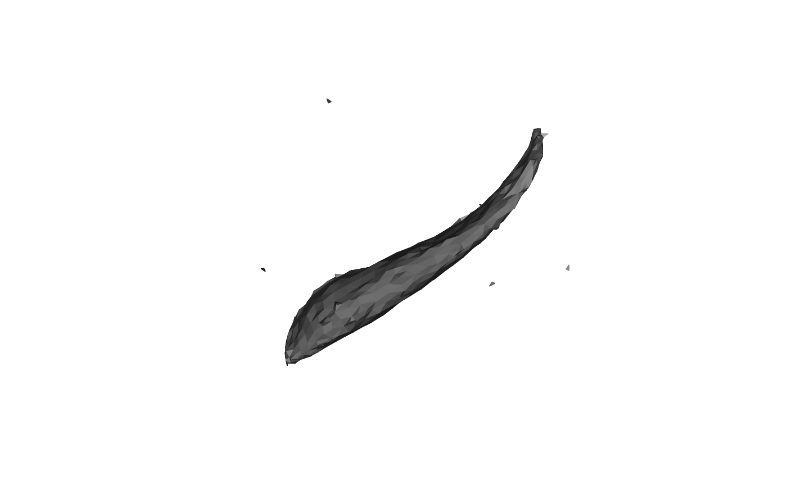

Localize white-matter and pial surfaces from an intensity volume
Source: R/mris-make-surfaces.R
mris_make_surfaces.RdStarting from a single closed surface mesh (typically a smoothed estimate
of the white-matter boundary, in the same physical coordinate space as
volume) and a co-registered intensity volume (such as a normalized
T1 scan), iteratively deforms the surface in two passes to localize
the white/gray-matter and gray-matter/CSF tissue-intensity
boundaries, producing a white and a pial surface.
Usage
mris_make_surfaces(
mesh,
volume,
white_intensity,
pial_intensity,
IJK2RAS = NULL,
max_thickness = 5,
step_size = 0.4,
n_averages = 4L,
niterations = 10L,
l_intensity = 1,
l_spring = 0.5,
momentum = 0.9,
dt = 0.5,
verbose = FALSE
)Arguments
- mesh
triangular mesh of class
'mesh3d'(or coercible viaensure_mesh3d), in the same physical (RAS) coordinate space asvolume. As withmris_inflate, the mesh must be closed, manifold, and genus-0 (watertight, no boundary or non-manifold edges, single connected component);mris_make_surfacesraises an error if such defects are detected- volume
a 3-dimensional numeric array of image intensities (such as a normalized
T1volume), co-registered withmesh- white_intensity
target intensity for the white/gray-matter boundary; the value the white-surface pass searches for along each vertex normal. For a normalized
T1volume this is typically close to the midpoint between the white-matter and gray-matter intensities- pial_intensity
target intensity for the gray-matter/
CSFboundary, analogous towhite_intensityfor thepial-surface pass- IJK2RAS
volume
IJK(zero-indexed voxel index) to surfacetkrRAStransform (a4x4matrix); default isNULL, which assumesvolumeis a conformed volume (LIAorientation,1mmisotropic 'voxels', centered at the volume midpoint, the same conventionfill_surfacedefaults to) and derives the transform fromdim(volume); set this explicitly whenvolumeuses a different orientation or voxel size- max_thickness
half-width, in
mm, of the per-vertex normal search window the intensity-target term samples. Default5- step_size
sampling step, in
mm, along the search window. Default0.4- n_averages
number of 1-ring gradient-averaging passes applied to the intensity-target gradient before the smoothness term is added (mirrors
mris_inflate's gradient-averaging step). Default4- niterations
number of deformation iterations per pass (white, then
pial). Default10- l_intensity
intensity-target term coefficient. Default
1.0- l_spring
smoothness (1-ring Laplacian spring) term coefficient. Default
0.5- momentum
momentum coefficient. Default
0.9- dt
time step. Default
0.5- verbose
logical; print per-pass progress. Default
FALSE
Value
A named list of two 'mesh3d' surfaces (each with
vb, it, and normals):
whiteSurface localized to
white_intensity.pialSurface localized to
pial_intensity, continuing fromwhite.
Details
The implementation keeps the two dominant ideas of the surface-placement procedure described in the literature (see References):
Intensity-target localization: for each vertex, sample
volumealong the vertex's current normal at offsets spanning \(\pm\)max_thicknessin steps ofstep_size, and pull the vertex toward the offset whose sampled intensity is closest to a single target value (white_intensityfor the white-surface pass,pial_intensityfor thepial-surface pass).Smoothness: a 1-ring Laplacian spring keeps the mesh regular while the per-vertex intensity term, which reacts independently to noisy image data, pulls vertices toward the tissue boundary.
Both terms are integrated with the same gradient-averaging and
momentum-integration machinery mris_inflate and
mris_sphere use: each inner iteration clears the gradient,
adds the intensity-target term, smooths it over n_averages passes of
1-ring averaging, adds the locally-acting smoothness term (which is not
itself smoothed),
then takes a momentum-integration step with a 1 mm per-step
displacement cap, and refreshes the vertex normals.
The white-surface pass runs first, for niterations iterations; the
pial-surface pass then continues from its result, with the momentum
velocity reset to rest, toward pial_intensity for another
niterations iterations.
This is a reduced port: the literature's procedure is a
multi-resolution optimization over roughly seven weighted energy terms
(intensity, intensity gradient, smoothness, self-intersection repulsion,
curvature, and more), using per-vertex gray/white/CSF intensity
statistics derived from a prior segmentation. Reproducing that faithfully
is out of scope for this package; white_intensity and
pial_intensity are supplied directly here instead, for example the
midpoints between the typical white-matter/gray-matter and
gray-matter/CSF intensities of volume.
References
Cortical surface-based analysis I: Segmentation and surface reconstruction. NeuroImage, 9(2), 179-194 (1999).
Examples
if (is_not_cran()) {
data("left_hippocampus_mask")
n_vox <- length(left_hippocampus_mask)
volume <- left_hippocampus_mask + runif(n = n_vox, 0, 1)
vox2ras <- diag(1, 4)
mesh <- vcg_isosurface(volume, threshold_lb = 0.99)
plot(mesh)
# Fix defects
mesh <- vcg_fix_defects(mesh, verbose = TRUE, merge_tolerance = 1.75)
res <- mris_make_surfaces(
mesh,
volume,
pial_intensity = 1.1,
white_intensity = 1,
IJK2RAS = vox2ras
)
plot(res$pial)
}

#> vcgFixDefects: input nv=9204 nf=15268, boundary edges=470, non-manifold edges=6
#> vcgFixDefects: [1] removed degenerate/duplicate faces -> nv=9204 nf=15268
#> vcgFixDefects: [2] merged 7742 close vertices -> nv=1462 nf=1475
#> vcgFixDefects: [3a] topology/normals ready, starting hole fill (max_hole_size=100)
#> vcgFixDefects: [3b] filled 0 hole(s) -> nv=1462 nf=1475
#> vcgFixDefects: [4] removed unreferenced vertices -> nv=719 nf=1475
#> vcgFixDefects: [5a] topology rebuilt, orienting coherently
#> vcgFixDefects: [5b] oriented=1 orientable=1
#> vcgFixDefects: removed/merged 7742 vertices (tol=1.75), filled 0 hole(s)
#> vcgFixDefects: output nv=719 nf=1475, boundary edges=0, non-manifold edges=88, oriented=yes, orientable=yes, normals_flipped_outward=no
